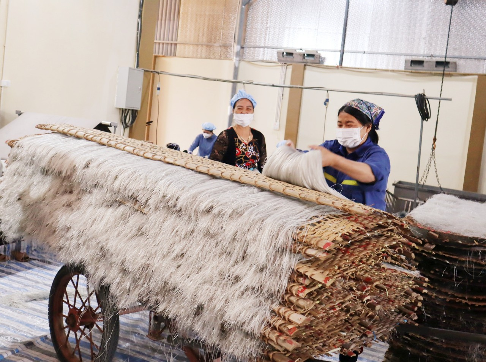
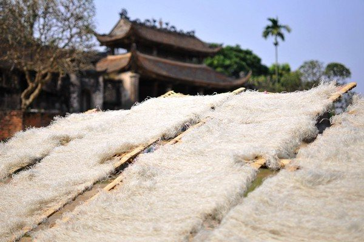

Giữ gìn hương vị mộc mạc của làng nghề Miến So qua từng thế hệ.
Sản phẩm miến làng So (xã Cộng Hoà, Quốc Oai, Hà Nội) được làm từ nguyên liệu 100% bột củ dong giềng nguyên chất từ lâu đã nổi tiếng với sợi miến thơm ngon và dai mềm. Hiện ở xã Công Hòa có khoảng hơn 100 hộ làm miến với sản lượng trung bình một ngày khoảng 3 tấn/1 hộ cung cấp khắp các tỉnh thành trên toàn quốc.


Bí quyết phơi sương, phơi nắng thủ công truyền thống giúp sợi miến So Quốc Oai có độ dai giòn đặc trưng. Dù nấu bát canh sườn nóng hổi, làm miến xào hải sản hay miến trộn, sợi miến vẫn tơi xốp, đượm vị nước dùng mà không hề bị nát.